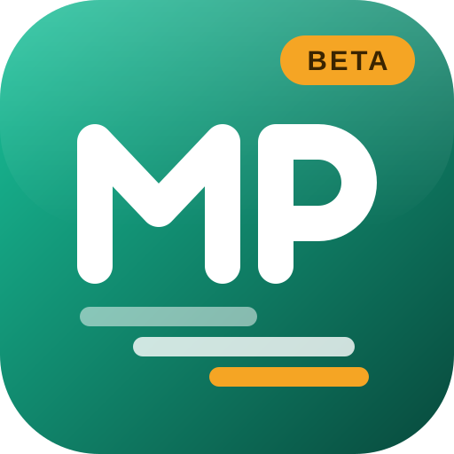

Manager ProOuvrir l’applicationSuivez vos budgets, planifiez vos tâches avec un diagramme de Gantt et sachez en un coup d’œil si chaque projet est rentable. Sans installation, directement dans votre navigateur.
Revenus, dépenses, budgets par projet et résultat de chaque projet.
Planning visuel avec dépendances : un retard décale automatiquement les tâches suivantes.
Équipes rattachées à chaque projet, rôles de chantier et coût de la main-d’œuvre.
Une devise par opération, avec conversion vers votre devise de référence.
Fichiers CSV et Excel pour vos comptables et vos clients.
Installable comme une application, avec sauvegarde en ligne de votre compte.